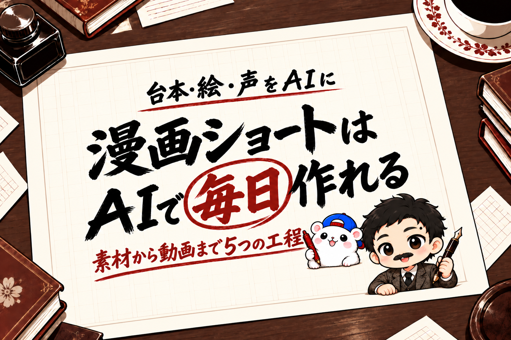

ショート動画は、まだ自分を知らない人に見つけてもらう入口として強い。
でも、毎日作るのは大変です。
台本を書いて、絵を用意して、声を入れて、動画に組み立てる。
1本ずつ人の手でやっていたら、続きません。
いまは、この工程をまるごとAIに任せて、人は「出すかどうか」だけ決める形にできます。
例えば、ぼくは毎晩、AIに漫画のショート動画を作ってもらっています。
寝ているあいだに台本・絵・声・組み立てまで進んで、最初の夜は2本で約35分でした。
(まだ投稿前なので、再生数の話はありません)
この記事で書くのは、3つです。
- ネタは、新しく考えなくていい
- 漫画ショートを自動にする5つの工程
- いちばんつまずくのは「絵の中の文字」
最後に、台本をAIに作らせるプロンプトも付けました。
1. ショートは入口。目的はコンテンツ販売
ショートのネタは、新しく考えなくて大丈夫です。
すでに書いた記事を、素材にすればいい。
記事には、もう数字も、失敗も、やり方も入っています。
それを40〜60秒の掛け合いに縮めるだけで、ショートになります。
そして、ショートを作ること自体を目的にしないこと。
ショートを見た人が、元の記事に来て、さらに教材やサービスに来る。
ショートは、その流れのいちばん外側の入口です。
例えば、ぼくの場合は、その日に公開した記事からショートを作り、説明欄に元の記事と教科書の販売ページのリンクを入れています。
2. 漫画ショートを自動にする5つの工程
(題材→台本→絵→声とセリフ→動画→スマホに届く。投稿は人が見てから)
漫画ショートは、5つの工程に分けると、そのままAIに渡せます。
① 題材をえらぶ
まだショートにしていない記事から、1本えらびます。
自分の発信のテーマに合わない記事は、飛ばします。
例えば、ぼくはAIの話が出てこない記事を飛ばす決まりにしています。
② 台本を書く
記事を読ませて、2人の掛け合いにします。
1人がツッコむ役、もう1人が記事の数字で答える役。
数字は記事に書いてあるものだけ、と決めておくのが大事です。
例えば、ぼくの台本は、コマ6〜7枚・セリフ12個前後・声にして300字前後です。
③ 絵を作る
コマごとの絵を、画像を作れるAIに頼みます。
できた絵は、AIに1枚ずつ点検させて、だめなコマだけ作り直します。
キャラクターの見た目の決まり(手の数・ほくろの位置など)を点検の項目にしておくと、ぶれません。
例えば、ぼくはCodex(OpenAIの、パソコンの作業を任せられるAI)に、月額のプランの中で絵を作ってもらっています。
④ 声とセリフを入れる
声は、文章を声にするAIで作ります。
できた声は、音声を文字にするAIで聞き直して、台本と照らし合わせます。
例えば、ぼくはElevenLabs(文章を声にするAI)で、自分の声のクローン(そっくりな声)を使っています。
▼【PR】声を作っているAI(ElevenLabs)

⑤ 動画にして、手元に届ける
コマと声とBGMを、縦型の動画に組み立てます。
投稿文もAIに書かせて、動画といっしょにスマホに届けてもらいます。
投稿は、人が見てから。
ここだけは人に残します。
例えば、ぼくの場合は、Claude Code(AIに、パソコンの作業をまるごと任せられるツール)の定期タスクが毎晩この5つを回して、Discord(チャットアプリ)に届けてくれます。
3. いちばんつまずくのは「絵の中の文字」
出典: きくりんの漫画ショート(2026年10月18日に自動で作った1本)。左=AIが描いた絵、右=完成した動画の1コマ
出典: きくりんの漫画ショートの見本(2026年10月17日)。左=画像を作るAIに描かせた吹き出し、右=フォントで入れた吹き出し
漫画ショートでつまずきやすいのは、吹き出しのセリフまで、AIに絵として描かせることです。
画像を作るAIは、文字、とくに数字をよくくずします。
なので、絵には空の吹き出しだけ描かせる。
セリフは、あとから文字(フォント)で入れる。
これなら数字はくずれませんし、声に合わせてセリフを出せます。
例えば、ぼくも最初の1本で、セリフの「87.2」という数字が、縦書きの中で「87.」と「.2」に割れました。
直しても、また割れる。
それで、文字は絵に描かせない形に切りかえました。
まねできる手順: 台本をAIに作らせる
いちばん時間がかかるのは、台本です。
AIには、こう頼めます。
次の記事を、40〜60秒の縦型の漫画ショートの台本にしてください。
(ここに記事の本文を貼る)
登場人物は2人です。
・左: からかう役(やんちゃな聞き役)
・右: ぼく(記事の数字で答える役)
決まり:
・コマは5〜7枚。1コマのセリフは左右1つずつまで
・セリフは全部で12個前後、声にして300字以内
・最初は、からかう役のツッコミ。次に、ぼくが記事の数字で答える
・数字は記事に書いてあるものだけ。足し算や言いかえで新しい数字を作らない
・吹き出しは縦書きなので、1列8字前後で「/」で区切る
・コマごとに、絵の場面(表情・持ち物・場所)を1行で書く。画面やスマホは「線だけ・文字なし」
コマ/だれ/セリフ/場面 の表にしてください。台本ができたら、場面の1行を、そのまま絵の指示に使えます。
記事を素材にして発信を回す流れは、『「AI×◯◯」コンテンツ販売の教科書』の第2部(素材をためる)と第4部(全媒体に出す)に書きました。
ショートの作り方そのものは、第8部「動画と講座」として第2版で足します。すでに買った人には、追加料金なしで届けます。
AIでどこまで自動にするか、投稿にAIで作ったことをどう書くかは、各サービスの規約を確かめたうえで、自己責任で決めてください。
例えば、ぼくは投稿文に「音声は本人の声をもとにAIで生成しています」と入れています。
まとめ
漫画ショートを自動にする工程は、5つです。
- 題材をえらぶ(ネタは自分の記事)
- 台本を書く(数字は記事にあるものだけ)
- 絵を作る(吹き出しは空のまま)
- 声とセリフを入れる(セリフは文字で)
- 動画にして、手元に届ける(投稿は人が見てから)
人がやるのは、見て、出すかどうかを決めることだけ。
あなたの記事なら、どの1本をショートにしますか?
▼記事を素材にして発信を回すやり方は、ぜんぶ1冊にまとめてあります
フォロワーゼロから利益95.8万円まで、54日間の数字と失敗と手順を、全部書いた教科書です。
録音から記事、教材、販売ページ、売れたあとの台帳まで。うちで毎日使っているツールも付録に入れました。
動画の章(第8部)は第2版で足します。すでに買った人には、追加料金はかかりません。
『「AI×◯◯」コンテンツ販売の教科書｜フォロワーゼロから利益95.8万円』


販売価格は3部売れるごとに2,000円ずつ値上がりします（上限あり）。内容・最新価格は販売ページをご確認ください。